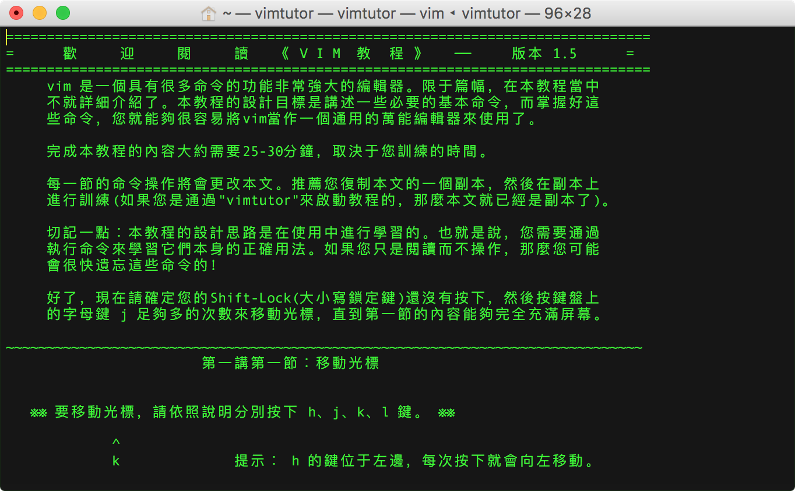

vim帮助
本文梳理了如何查看 vim 帮助手册以及查询帮助示例。
vimtutor#
终端输入 vimtutor 命令可查看 vim 入门教程：

输入 :q 退出。
说明：
通過"vimtutor"來啟動教程，每次都会生成一份副本，方便边学习边实践。
底行输入 :f / :fi / :file 即可查看当前打开的 tutor 副本的路径：/private/var/folders/k6/7f8bh1ws4ygfg9pcq48w5tk00000gn/T/tutor***
退出 tutor 时，该副本
tutor***将会被删除。
/usr/share/vim/vim[0-9][0-9]/tutor 目录下存放着多语言版本的帮助教程，中文 macOS 系统终端输入 vimtutor 命令，将打开对应繁体中文版本《tutor.zh.utf-8》（vimtutor zh）的副本：
➜ ~ cd /usr/share/vim/vim[0-9][0-9]/tutor
➜ tutor vim tutor.zh.utf-8
===============================================================================
= 歡 迎 閱 讀 《 V I M 教 程 》 ── 版本 1.5 =
===============================================================================
我们也可以通过 vimtutor en 指定打开en英文版《tutor.utf-8》教程：
===============================================================================
= W e l c o m e t o t h e V I M T u t o r - Version 1.7 =
===============================================================================
vim manual#
以下节选 vim manual page 的概要（SYNOPSIS）和描述（DESCRIPTION）章节：
pi@raspberrypi:~ $ man vim
VIM(1) General Commands Manual VIM(1)
NAME
vim - Vi IMproved, a programmers text editor
SYNOPSIS
vim [options] [file ..]
vim [options] -
vim [options] -t tag
vim [options] -q [errorfile]
ex
view
gvim gview evim eview
rvim rview rgvim rgview
DESCRIPTION
Vim is a text editor that is upwards compatible to Vi. It can be used to edit all
kinds of plain text. It is especially useful for editing programs.
There are a lot of enhancements above Vi: multi level undo, multi windows and buffers,
syntax highlighting, command line editing, filename completion, on-line help, visual
selection, etc.. See ":help vi_diff.txt" for a summary of the differences between Vim
and Vi.
While running Vim a lot of help can be obtained from the on-line help system, with the
":help" command. See the ON-LINE HELP section below.
Most often Vim is started to edit a single file with the command
vim file
More generally Vim is started with:
vim [options] [filelist]
vim doc#
vim 的帮助说明文档存放在 /usr/share/vim/vim[0-9][0-9]/doc 目录下。
可执行 ls /usr/share/vim/vim[0-9][0-9]/doc 一览其下的所有帮助文档（*.txt）。
当然，我们可以直接在终端 Shell Prompt 中输入 vim -R /usr/share/vim/vim[0-9][0-9]/doc/*.txt（-R选项表示 readonly），打开查看我们感兴趣的 vim 话题。
元帮助文档（helphelp）#
或在 vim 底行模式下输入 :h help 或 :help help，vim 将新起分屏（window）以只读方式打开 /usr/share/vim/vim[0-9][0-9]/doc 中如何使用帮助的说明文档 helphelp.txt（帮助文档的帮助文档）。
关于”底行模式”，参考下一节。
帮助文档（help）#
按下 <F1> 键或在 vim 底行模式输入 :help（:h），可以查看帮助文档。
vim 将新起分屏（window）以只读方式打开 /usr/share/vim/vim[0-9][0-9]/doc/help.txt 文件。
Open a window and display the help file in read-only mode.
按下组合键 CTRL-W_w（可简记为<C-w>w：按下 ctrl+w，再按一次 w），可在当前 vim 窗口和 help 分屏窗口之间切换；输入 ：q 或 :close 可以关闭帮助窗口。
在 VIM - main help file（help.txt）中，我们可以查看到 vim 帮助系统的组织层次。
其中主要分 USER MANUAL 和 REFERENCE MANUAL 两个部分：
-
USER MANUAL: These files explain how to accomplish an editing task.
Getting Started ~:
usr_1*.txt
Editing Effectively ~:usr_2*.txt
Tuning Vim ~:usr_4*.txt
Making Vim Run ~(Installing Vim):usr_90.txt -
REFERENCE MANUAL: These files explain every detail of Vim. reference_toc
以下节选 REFERENCE MANUAL 部分议题：
General subjects ~
- |intro.txt| general introduction to Vim; notation used in help files
- |help.txt| overview and quick reference (this file)
- |helphelp.txt| about using the help files
Basic editing ~
- |starting.txt| starting Vim, Vim command arguments, initialisation
- |editing.txt| editing and writing files
- |motion.txt| commands for moving around
可执行 cat 或 vim -R 命令打开 intro.txt 文件查看 vim 介绍：
Introduction to Vim *ref* *reference*
1. Introduction |intro|
2. Vim on the internet |internet|
3. Credits |credits|
4. Notation |notation|
5. Modes, introduction |vim-modes-intro|
6. Switching from mode to mode |mode-switching|
7. The window contents |window-contents|
8. Definitions |definitions|
==============================================================================
1. Introduction *intro*
可执行 cat 或 vim -R 命令打开 starting.txt 文件查看 vim 启动说明：
Starting Vim *starting*
1. Vim arguments |vim-arguments|
2. Vim on the Amiga |starting-amiga|
3. Running eVim |evim-keys|
4. Initialization |initialization|
5. $VIM and $VIMRUNTIME |$VIM|
6. Suspending |suspend|
7. Saving settings |save-settings|
8. Views and Sessions |views-sessions|
9. The viminfo file |viminfo-file|
==============================================================================
1. Vim arguments *vim-arguments*
在 vim txt 文档中，每节标题的右侧以
*标注的为索引关键字，例如 ref、intro，starting、vim-arguments。
搜索帮助（Search for help）#
help.txt 中介绍了搜索帮助的方法：
Search for help: Type "
:help word", then hitCTRL-Dto see matching help entries for "word". Or use ":helpgrep word".
在 vim 底行模式输入 :h[elp] word，可搜索 vim 中匹配关键字 word 的命令或选项的说明文档。
查询帮助示例#
-
查看
vimrc相关的话题：:h
vimrc -
查看如何使用帮助：
:help
help -
查看 vimdoc 的标记体例：
:h
key-notation -
查看
h按键的作用（motion left）:h
h -
查看
w按键的作用（words forward）:h
w -
查看底行模式下
w命令的作用（:w/:write）:h
:w -
查看
noh命令的作用（:noh/:nohlsearch）:h
noh -
查看复合按键
[[（连按 [）的作用（sections backward）:h
[[ -
查看模式切换相关的话题：
:h
mode-switching -
查看多窗格切换
CTRL-W相关命令：:h
CTRL-W_j[khl]或 :hCTRL-W_CTRL-J[KHL]：Move cursor to Nth window below/above/left/right current one. -
分别查看
CTRL-C组合按键（Ctrl+c，可简记为<C-c>）命令在 normal、insert、visual、command-line 模式下的作用：:help
CTRL-C
:helpi_CTRL-C
:helpv_CTRL-C
:helpc_CTRL-C
vimman#
vimman - View vim plugin manuals (help) like man in zsh
git clone 到 $ZSH_CUSTOM/scripts/vimman 后，在 ~/.zshrc 中 source 该 zsh 脚本重启生效。
示例：vimman number 查看 number 相关帮助主题：
vim在线帮助#
VI(1P)
Vim documentations
Vim documentation: help
Vim: help.txt
Vim: usr_toc.txt
Vim: quickref.txt